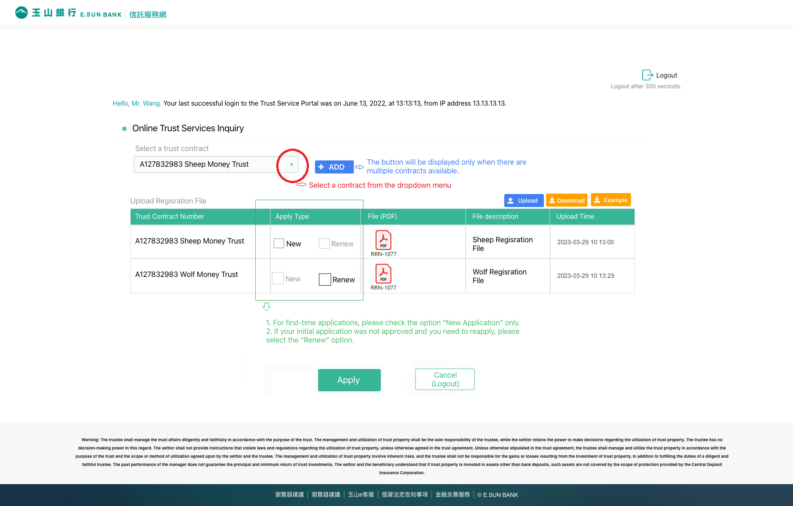

Feb-Mar 2023
Project overview
Why this porject?
Problem statement
Insigths
Redesign feature
Redesign user flow
User testing
Results & takeaways
I am the sole designer for this project and have been working closely with PM and engineers throughout the development process.
The objective of this project is to create an intuitive trust inquiry system, enabling customers to easily access information and replace paper-based processes.
＊This website was originally written in Mandarin and has been translated into English for the purpose of this portfolio.
Background
Although the current system already has a trust inquiry feature, it lacks a personal trust inquiry function. Therefore, in this version update, we have planned to include a personal trust inquiry service on the website to enhance the overall trust inquiry functionality.
*Personal Trust Inquiry: This feature allows trust owners to inquire about the beneficiaries, inventory, transaction details, and other related information of their trusts.

Problems
-
1. How to deal with multiple Login Paths?The existing personal trust system consists of two different types of trusts, each with its own authentication process. Users only need to authenticate the one they need. Therefore, each user will have their own login path based on the trust they want to inquire.
-
2. How to express proprietary terms?In the banking industry, there are specific terms used for different types of trusts, such as "self-beneficiary trust" and "third-party beneficiary trust." The authentication process for these two types of trusts varies. It is important to address how to present these proprietary terms in a way that is easily understandable to users.
-
3. What is the file upload process?One of the authentication steps involves file upload, but there are some details that need to be confirmed before the file can be uploaded. Therefore, the goal is to design an intuitive and simple process to ensure a smooth file upload experience.
-
4. How to present the query options?Product team proposes providing a wide range of query options. For a single trust, users can query four different sub-items: basic information, inventory details, transaction history, and statement download. To avoid a cluttered interface, careful planning is needed to organize these options effectively.
Solutions
1. Clarify User Types to Identify Login Path
During the meeting, we quickly identified five different login scenarios and planned individual user flows based on these scenarios. We will then design subsequent screens based on these flows.
- Only Self-Benefit Trust
- Only Third-Party Benefit Trust
- Both Self-Benefit Trust and Third-Party Benefit Trust (both not verified)
- Both Self-Benefit Trust (verified) and Third-Party Benefit Trust (not verified)
- Both Self-Benefit Trust (not verified) and Third-Party Benefit Trust (verified)
2. UX Writing of Self-benefit Request and Non-self-benefit Request
As mentioned, we need to address the UX writing for self-benefit and non-self-benefit requests. We have chosen three versions and conducted internal testing, and it was found that using the most conversational tone is easier to understand.
> Terms we choose to do internal user testing
| Version | Term 1 | Term 2 | Understanding rate |
|---|---|---|---|
| 1 | Self-beneficial request | Non-self-beneficial request | 10% |
| 2 | Trustor and beneficiary are the same individual. | Trustor, beneficiary, and supervisor are different individuals. | 60% |
| 3 | Only singular trustor, beneficiary. | Multiple trustors, beneficiaries, supervisors. | 30% |
> Final design

3. Document Upload Process Page
The old process was entirely offline, but in this update, we aim to integrate it online.
> Original Concept
Initially, the PM wanted to consolidate all the steps on a single page. However, during internal testing, it was found that having everything on one page made it unclear for users which steps to begin with and what their progress should be.
> New Design
Therefore, the decision was made to separate the steps and use a progress bar to indicate the required completion steps.
4. Layout of Query Options
After successfully logging in, the design includes a two-stages table to allow users to perform trust inquiry.
> Stage One
- Users can overview all trust information.
- Users can click on a specific trust to access more detailed information.
> Stage Two
- Upon clicking a trust, users are directed to the detail page.
- Tab navigation is implemented to allow users to choose the desired inquiry category.
- Users can also use the buttons at the bottom of each page to return to the overview page.
Takeaways
- Utilizing our existing design system and components allowed us to skip the wireframing stage and quickly create real product pages for testing.
- Initially, we planned to have fewer pages, aiming to reduce development time. However, through testing, we discovered that breaking down steps and minimizing actions on each page was more suitable for a website with many professional terms.
- Based on the test results, the final product adopted the new design approach to enhance the user experience and make it more intuitive.